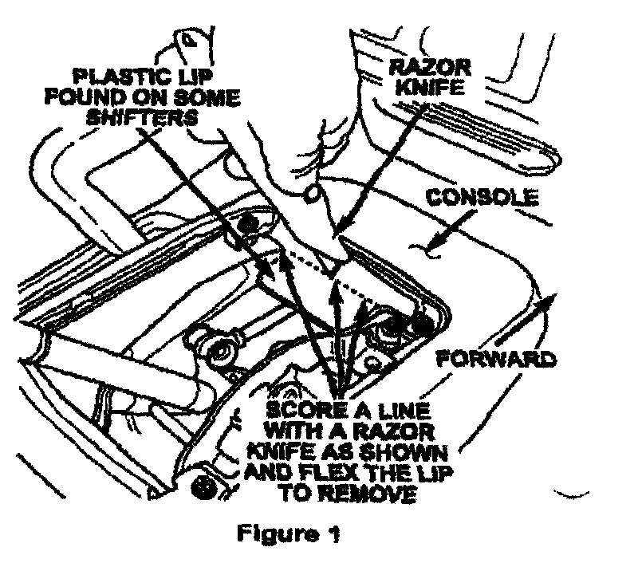
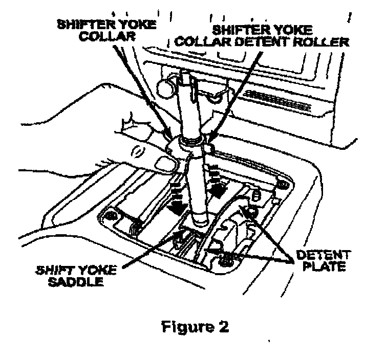
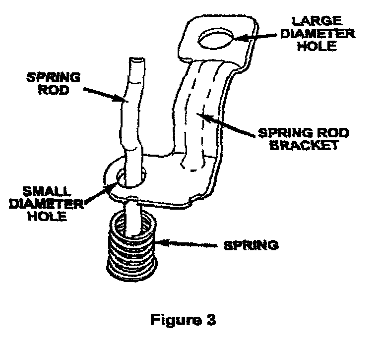
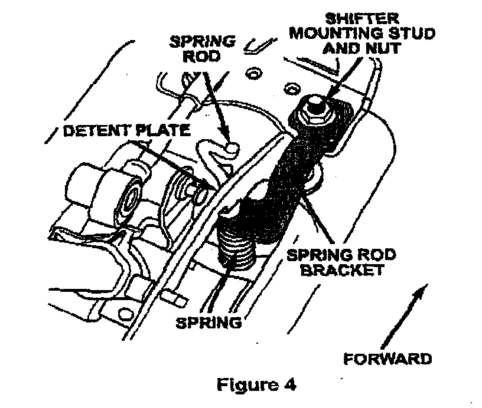
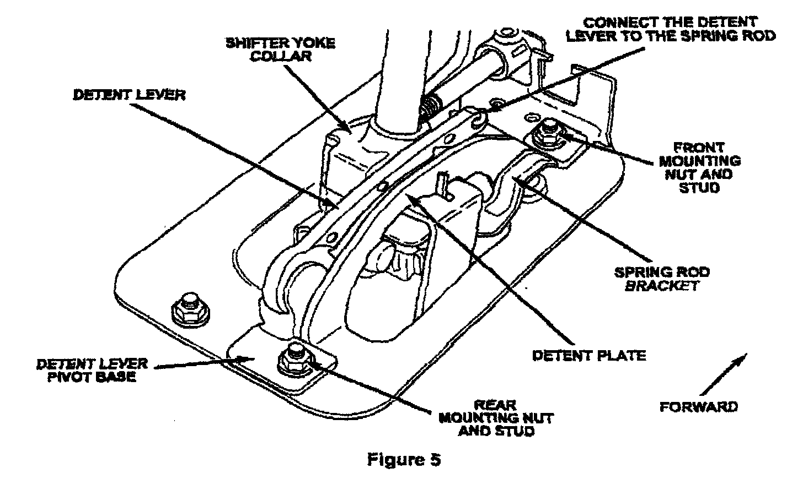
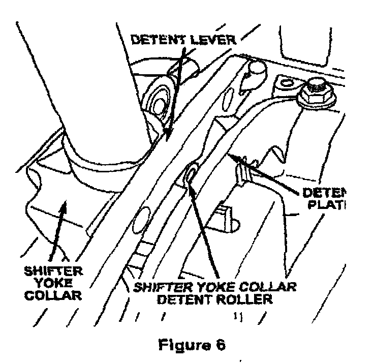
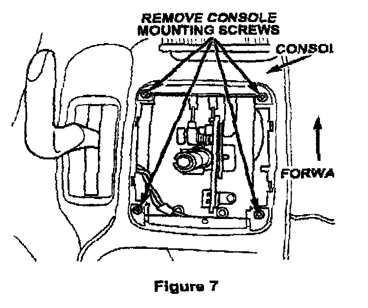

Service Procedure
1. Secure the vehicle to prevent it from rolling while performing the repair procedure.2. Place the shifter in the low "1" position.
3. Using a strong upward pulling motion, remove the shifter knob.
WARNING
Keep your face, neck and chest clear of the shifter knob while applying upward force to prevent personal injury.
4. Using a plastic trim stick or equivalent, remove the shifter PRNDL bezel and disconnect the PRNDL light.

5. Some vehicles may have an additional plastic lip on the console bracket (Figure 1). If this lip is present, score the lip with a razor knife as shown in Figure 1 and then flex the lip to detach it from the console bracket. Discard the lip, it is not required for proper shifter function.
6. Remove the front and rear passenger side floor shifter mounting nuts.

7. Install the shifter yoke collar over the shifter yoke (Figure 2).

8. Insert the spring rod through the spring rod bracket as shown in Figure 3.

9. Install the spring rod and spring rod bracket assembly under the detent plate and onto the front mounting stud (Figure 4).
10. Install the front floor shifter mounting nut onto the stud. Tighten the nut to 220 in-lbs. (24 N.m).
11. Move the shifter lever to the reverse "R" position.

12. Hook the spring rod through the detent lever (Figure 5).
NOTE:
The spring rod must be oriented through the detent lever as shown in Figure 5.
13. Install the detent lever pivot base over the rear shifter mounting stud (Figure 5).
14. Install the rear floor shifter mounting nut onto the stud and tighten to 220 in-lbs. (24 N.m).

15. Verify that the detent lever is positioned (centered) directly over the shifter yoke collar detent roller (Figure 6).
16. Cycle the shifter lever from reverse "R" to "1" and then to the park "P" position.
17. Place the ignition key in the "LOCK" position and verify that the key can be removed from the lock cylinder.

18. Remove the four (4) console-to-console bracket Phillips head mounting screws (Figure 7).
19. Lift the console slightly and place one (1) washer between the console mounting bracket and the console at each of the four (4) screw locations to shim the console upward (Figure 7).
20. Reinstall the four (4) console mounting screws (Figure 7).
21. Install the light into the PRNDL bezel.
22. Snap the PRNDL bezel into the console.
23. Install the shifter knob.
24. Cycle the shifter lever from "PARK" to "1" and back to "PARK" to verify proper shift indicator ribbon routing and that the shifter knob is fully seated.
25. Verify that the PRNDL illuminates properly by turning on headlights.